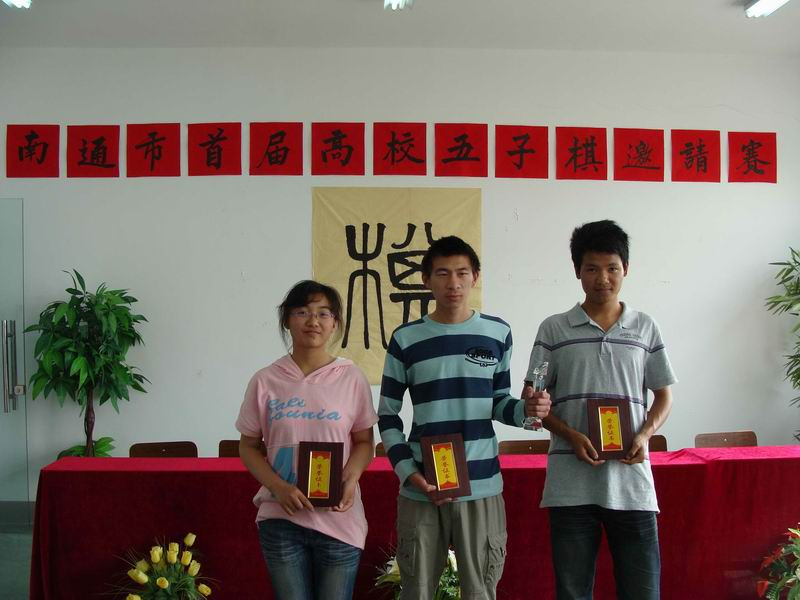
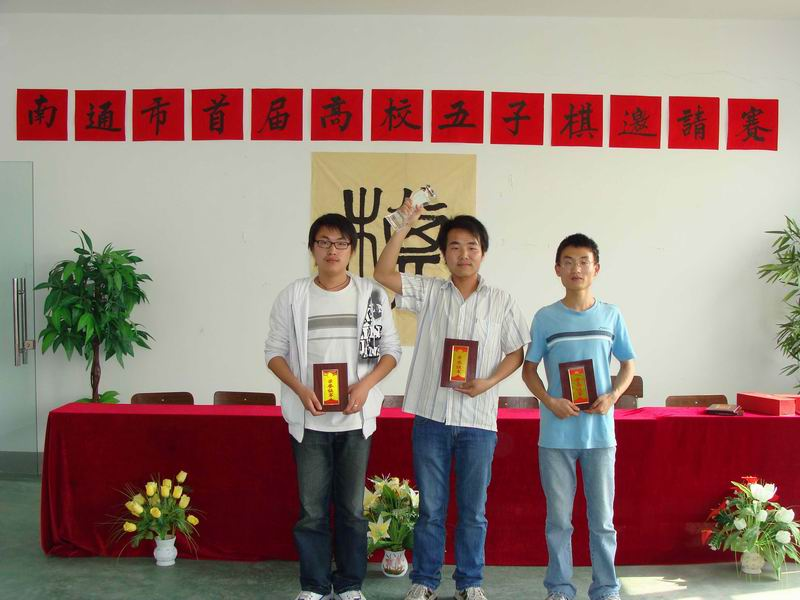
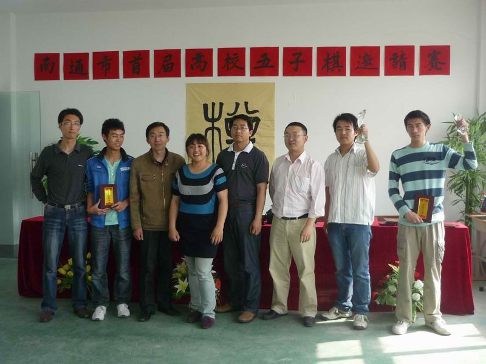
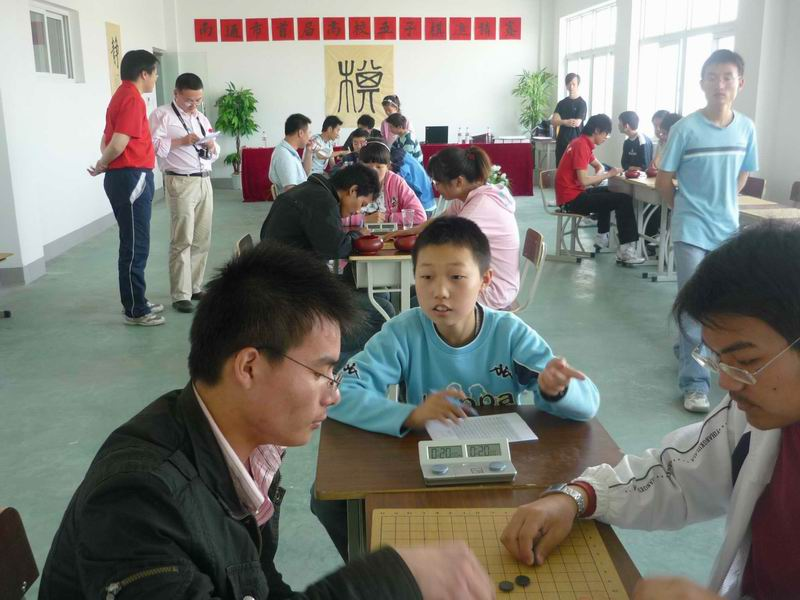
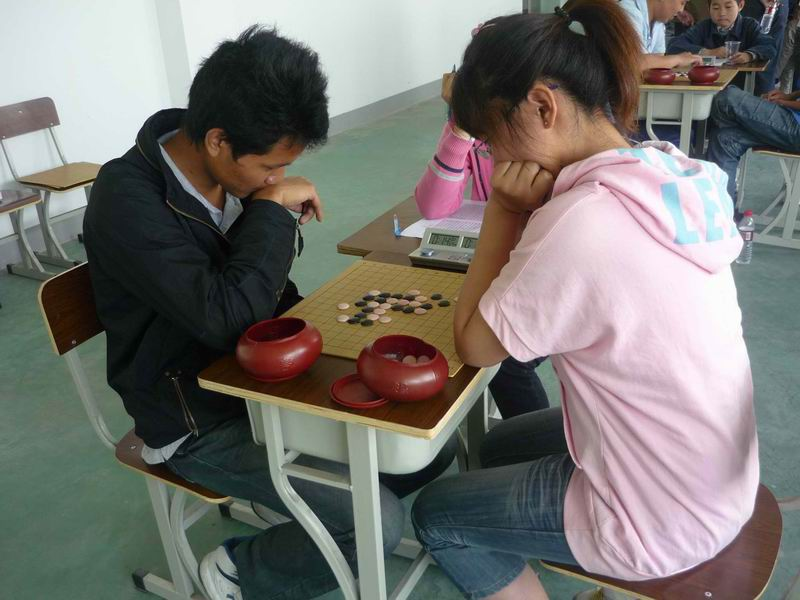

南通首届高校五子棋比赛决赛落下帷幕
#1 南通首届高校五子棋比赛决赛落下帷幕 作者：黄药师 发表时间：2009-5-25 21:52:29
最后成绩：
南通首届高校五子棋邀请赛决赛 | ||||||||||
| 丁保宽（航） | 朱泳树 （通） | 陈鹏（航） | 胡超 （紫） | 缪知江（职） | 徐菁琳 （通） | 相岩 （农） | 徐健澄 （紫） | 积分 | 名次 | |
| 丁保宽（航） | 1 | 0 | 1 | 1 | 1 | 1 | 1 | 6 | 1 | |
| 朱泳树（通） | 0 | 0 | 0 | 1 | 0 | 1 | 1 | 3 | 6 | |
| 陈鹏（航） | 1 | 1 | 0 | 0 | 0 | 1 | 1 | 4 | 4 | |
| 胡超（紫） | 0 | 1 | 1 | 0 | 0 | 1 | 1 | 4 | 3 | |
| 缪知江（职） | 0 | 0 | 1 | 1 | 1 | 0 | 0 | 3 | 5 | |
| 徐菁琳（通） | 0 | 1 | 1 | 1 | 0 | 1 | 1 | 5 | 2 | |
| 相岩（农） | 0 | 0 | 0 | 0 | 1 | 0 | 1 | 2 | 7 | |
| 徐健澄（紫） | 0 | 0 | 0 | 0 | 0 | 1 | 0 | 1 | 8 | |
下图：从左往右依次是个人赛第二名 徐菁琳 第一名 丁保宽 第三名 胡超

下图：个人赛前8的选手合影留念
下图：从左往右依次是 团体赛第二： 南通大学代表队 第一：南通航运技术学院 第三 ：南通紫琅技术学院

下图：裁判们的合影

决赛8的名选手进行了7轮的循环比赛，由于首次使用棋钟（每人20分钟，时间用完判负），不少棋手非常不适应，比赛非常激烈，很多场对局都把时间用完，尤其是通大的徐菁琳（唯一的女生，个人赛第二名）和紫琅的胡超（个人赛第三名）的比赛中，徐菁林在自己还剩下10秒的时候利用对方经验不足，在成功防住对方活三的同时反先手，并一举获得了胜利，令在场观战的人都惊叹其冷静的头脑，同时也为胡超的失利而扼腕可惜。航运学校的丁保宽相对其他选手而言，对开局定式比较熟悉，尤其对寒星和恒星的变化比较熟练，在击败各路选手后获得个人赛冠军。



综观本次比赛，从策划到举办历时2个多月，90个选手分预赛复赛决赛三轮历经三个比赛日，几百场比赛的对局，终于落下帷幕。如此大规模的五子棋比赛在南通还是首次，从这次比赛中，参赛选手们结识了许多不同专业不同年级的同学，从而促进了同学之间的交流，更好的发扬了中国五子棋的传统文化。此次活动的目的是进一步活跃校园文化，丰富课余生活，培养思维能力，同时也让大家了解五子棋文化。虽然此次活动取得了不可否认的成绩，但是我们还存在很大的不足。如工作人员在积分编排的过程中，有些地方遗漏了等等……
这次活动圆满的结束给了我们信心和经验，同时也吸取活动不足的教训，相信南通五子棋在以后的发展中能走得更好更远！
决赛对局将陆续添加的棋谱库中，欢迎大家点评，南通五子棋的起步比较晚，还有很多不足的地方，这次高校五子棋比赛也无法和上海北京浙江等水平较高的地方相比，参赛的棋手大部分是不了解开局和定式，很大程度上是考验着他们的计算力。
［此帖子已被 有志青年 在 2012-5-20 13:04:52 编辑过］
#2 Re:南通首届高校五子棋比赛决赛落下帷幕 作者：开元棋牌社 发表时间：2009-6-1 12:20:40
呵呵 希望以后的质量会更高#3 Re:南通首届高校五子棋比赛决赛落下帷幕 作者：神龙 发表时间：2009-6-5 14:59:41
好个考验计算力~
#4 Re:南通首届高校五子棋比赛决赛落下帷幕 作者：冷风飘雪 发表时间：2009-6-16 15:11:15
顾老师，我是小丁，不要谦虚啊！！祝南通五子棋事业越办越好！顶下！！呵呵！［ 黄药师 于 2009-6-16 17:40:44 时奖励此帖[金币加 20 威望加1］
#5 Re:Re:南通首届高校五子棋比赛决赛落下帷幕 作者：黄药师 发表时间：2009-6-16 17:40:22
引用：
原文由 冷风飘雪 发表于 2009-6-16 15:11:15 :
顾老师，我是小丁，不要谦虚啊！！祝南通五子棋事业越办越好！顶下！！呵呵！

南通五子棋的发展离不开各位大学生朋友的鼎立支持！！！
#6 Re:南通首届高校五子棋比赛决赛落下帷幕 作者：17号蓝星仔 发表时间：2009-6-17 11:14:45
来支持支持 办得真不错 万事开头难 你们能开了这么一个好头 离成功不远了哦 不过一定不能浮躁 呵呵 加油#7 Re:Re:南通首届高校五子棋比赛决赛落下帷幕 作者：黄药师 发表时间：2009-6-17 19:37:18
引用：
原文由 17号蓝星仔 发表于 2009-6-17 11:14:45 :
来支持支持 办得真不错 万事开头难 你们能开了这么一个好头 离成功不远了哦 不过一定不能浮躁 呵呵 加油
不过一定不能浮躁
非常相当的有道理～